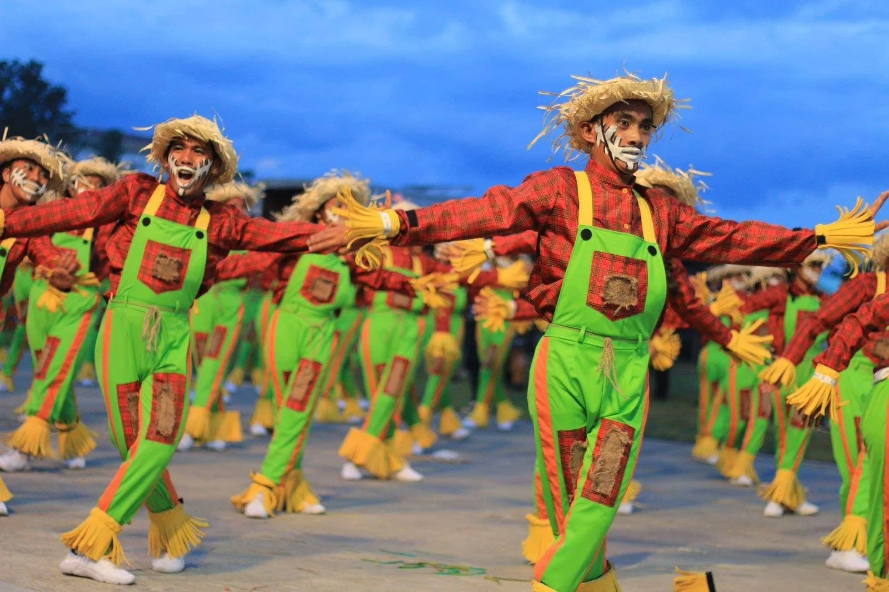
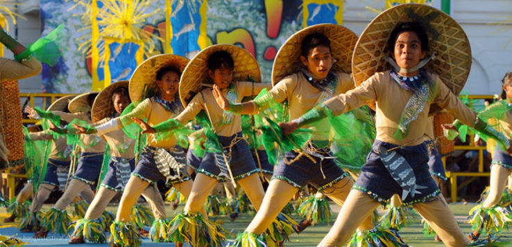
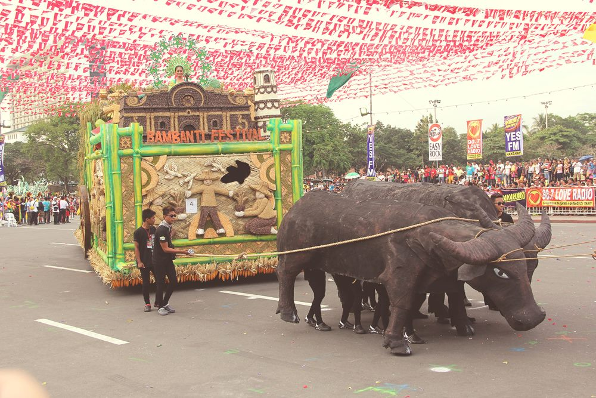
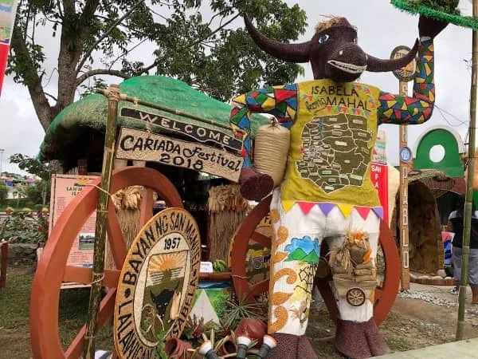

Experience top vibrant festivals filled with color, culture, and community pride.

Celebrate Isabela’s farmers with colorful street dances, giant scarecrows, and local products in Ilagan City.

Tumauini honors corn and agricultural heritage with parades, cultural shows, and corn-inspired festivities.
Alicia celebrates rice and community pride with street dances, floats, and harvest-themed events.
Santa Maria showcases its Ibanag pottery tradition through cultural exhibits, music, and street parades.

San Pablo highlights cattle culture with rodeos, fairs, and agricultural displays.

San Manuel commemorates rice farming heritage with parades, cultural performances, and harvest celebrations.
Celebrate, dance, and immerse yourself in the vibrant festivals that bring Isabela to life.